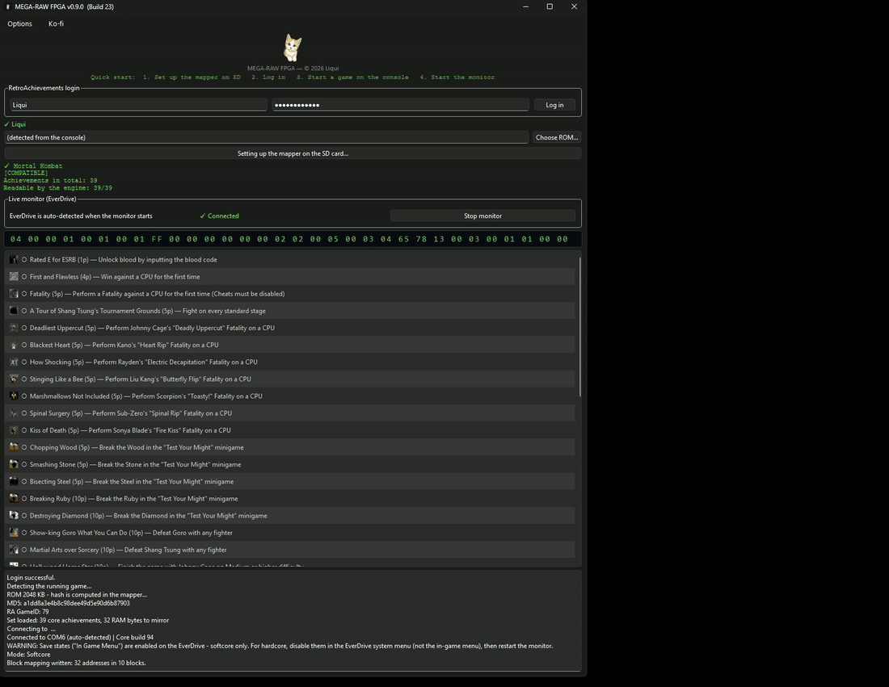
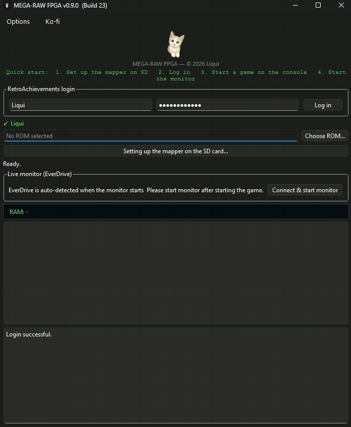

// Mega Drive · Genesis · Mega EverDrive · FPGA
MEGA-RAW
RetroAchievements on real Mega Drive hardware — no emulator, no ROM patch. A custom FPGA mapper reads the 68000 bus as the game runs, identifies the cartridge by itself, and brings its own save state menu along.
live signal path — three lanes, one mapper
What it is
MEGA-RAW connects a physical Mega Drive, a Mega EverDrive and RetroAchievements. Achievements trigger from the actual console state, read straight off the CPU bus while you play. The game itself is never touched.
How it works
A custom FPGA core inside the Mega EverDrive replaces the cartridge mapper. It does three things at once, and the running game notices none of them. Your PC reads the live mirror over USB and evaluates the achievement conditions there. Nothing is written back into the running game.
Bus-snoop, not ROM-patch
Games run completely unmodified. No IPS file, no injected stub, no per-game hook database to maintain, and no two-megabyte size limit. The mapper mirrors writes to work RAM as the CPU makes them.
The cartridge names itself
The FPGA reads the ROM on its own, in the idle gaps between 68000 bus cycles, and hashes it while it reads. Sixteen bytes travel over USB instead of two megabytes, so a game is recognised in seconds. Nothing to select, no collection folder to point at.
Live RAM mirror
The core mirrors the console's work RAM in real time as the CPU writes to it. Only the addresses the achievement set actually needs are mirrored, so the transfer stays small enough to keep up with the game.
Its own save state menu
Replacing the cartridge mapper normally costs you the EverDrive's in-game menu — the save state controller is not part of the published sources, so a custom core has nothing to fall back on. MEGA-RAW brings its own along instead. Start + Down opens an overlay over the running game: save, load, continue. The mapper catches the CPU on the next vertical blank and keeps a complete picture of the machine — work RAM, video RAM, colour RAM, VDP registers, the Z80 and its memory — then puts it all back exactly as it was.
Hardcore mode
Fair play, enforced
MEGA-RAW checks your setup before and during a session and only counts Hardcore when the conditions are actually met. Leave the EverDrive's own in-game menu enabled and it says so and switches to Softcore — no accidental Hardcore unlocks on a configuration that would not qualify.
Known limits
The same limits apply as to any hardware save state: games without vertical blank interrupts cannot be interrupted, and the sound chips cannot be captured. Some games use the Start button themselves — if Continue does not react in the menu, confirm with C instead.
Requirements
- Cartridge
- Mega EverDrive CORE (tested) · PRO (same interface, untested)
- Console
- Original Mega Drive / Genesis hardware
- Connection
- USB (EverDrive ↔ PC)
- Platform
- Windows
- Account
- Free RetroAchievements account
Development and testing happen on the Mega EverDrive CORE. The PRO uses the same interface and should work, but has not been tested. Other models are untested.
Download
Two builds. The FPGA build is the one to use: unpack it and double-click the executable. No Python, no dependencies, nothing to install.
MEGA-RAW (FPGA) — recommended
Unpack, double-click, done. Custom mapper, automatic cartridge detection, in-game save state menu, achievement list with badges, unlock popup, live RAM view, English and German. Nothing is patched.
Latest release ›MEGA-RAW (patched)
The original approach. A small routine is patched into the ROM and reports values the PC reads over USB. Over six hundred games are prepared this way. It still works and stays available, but new work goes into the FPGA build.
All releases ›Setup instructions and the full changelog are on GitHub.
See it running
An achievement unlocking as it happens on the console. The condition is evaluated from the live RAM mirror, submitted to RetroAchievements, and the unlock appears on screen.

And the start of a session: log in, and the cartridge in the console identifies itself. No file to pick, no folder to point at.
